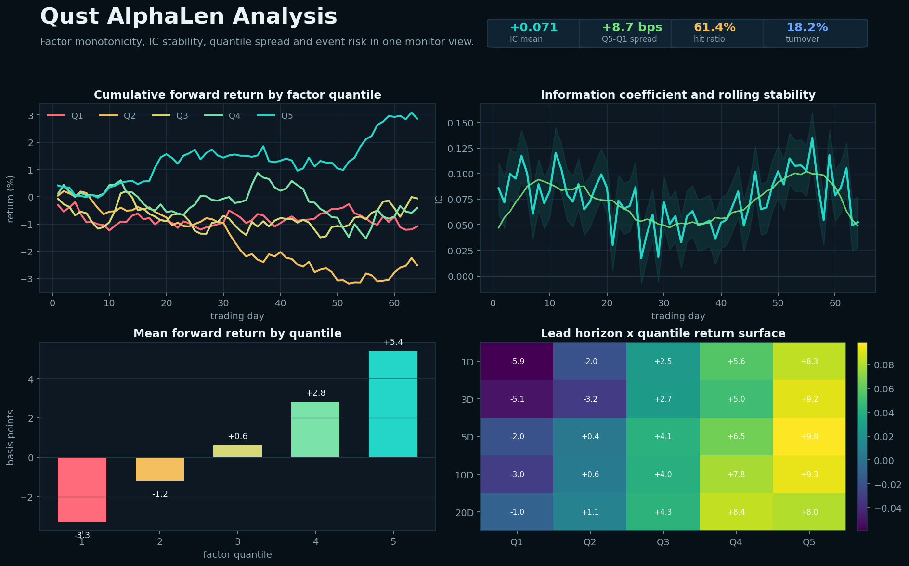

分位数单调性
按交易日对因子截面分桶，比较高低分位远期收益，判断 spread 是否稳定。
Namespace
用于因子研究和 AlphaLen 分析链路，把因子值、未来收益、分位数组合、IC 诊断和 Monitor 面板串成同一套表达式。
Alpha 命名空间把因子研究里的四件事放在同一条表达式链路里：因子列、未来收益、分位数诊断和 Monitor 可视化。这样研究者可以从公式直接走到图表和样本回查。

按交易日对因子截面分桶，比较高低分位远期收益，判断 spread 是否稳定。
用因子值和未来收益的相关性序列评估因子是否持续有效。
同时检查不同持有周期，识别短周期冲击、趋势延续或慢变量因子。
| 算子 | 输入 | 输出 | 例子 |
|---|---|---|---|
alpha() | datetime, code, alpha, ret | 返回 AlphaNamespace | 接口 |
alpha.alphalen_analysis | datetime, code, alpha, ret | 返回 Expr | 接口 |